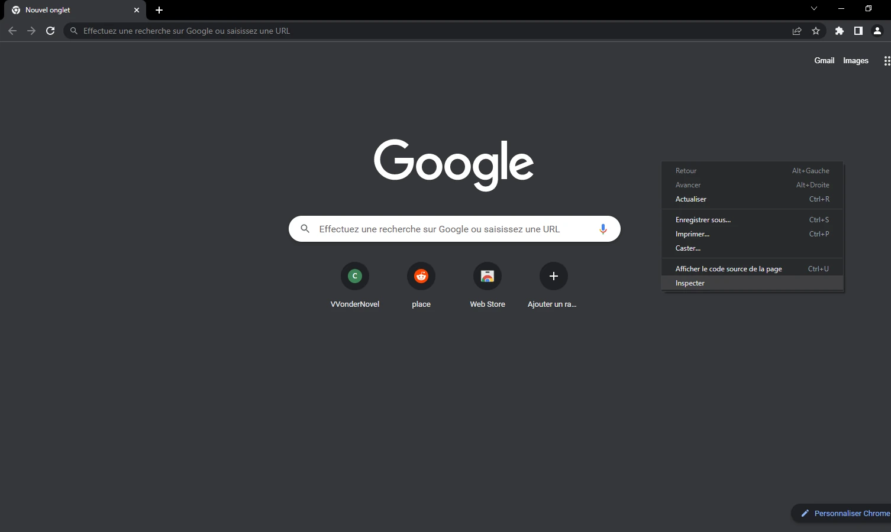
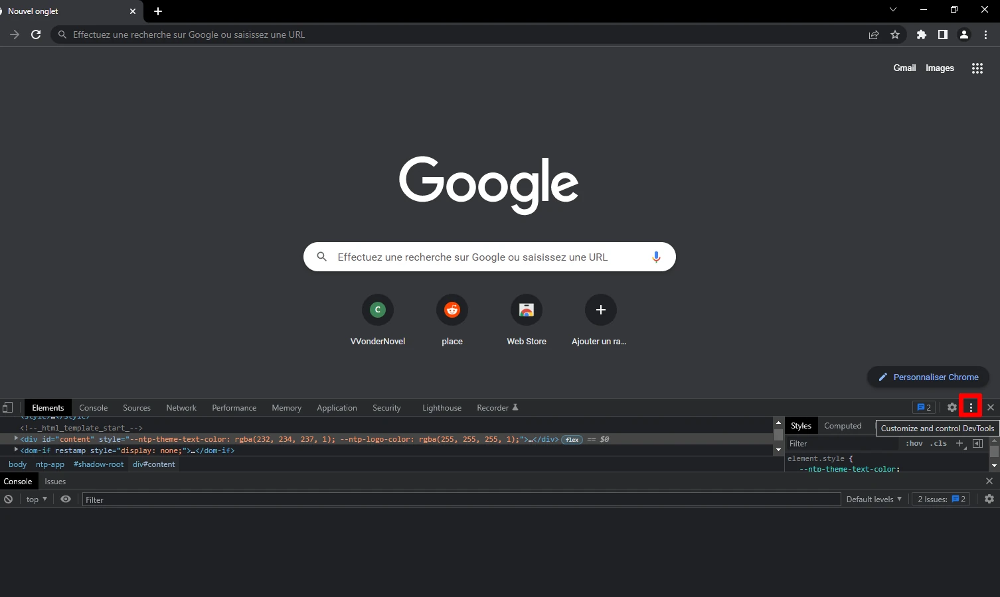
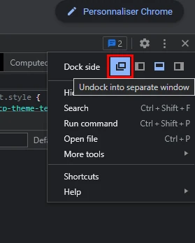
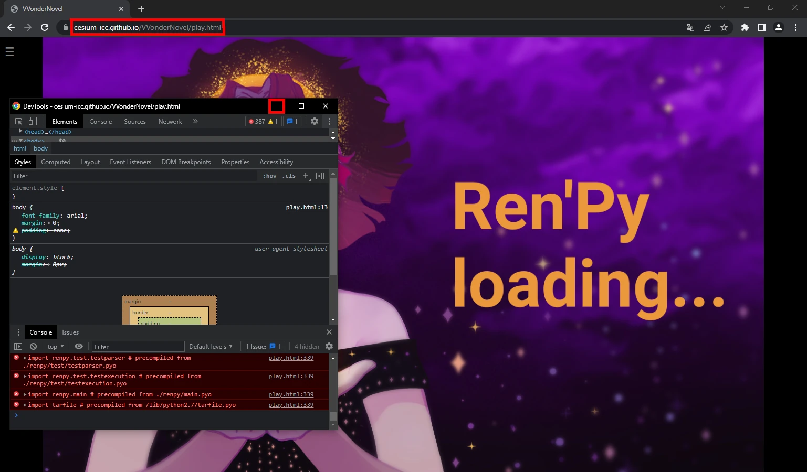

Comment lancer VVonderNovel sur Google Chrome
- Ouvrir un onglet et ouvrir l'outil de développement : F12 (ou Ctrl+Shift+I, ou clique-droit / inspecter)

- Cliquer sur les trois points en haut à droite du truc qui vient de s'ouvrir.

- Cliquer sur le bouton "Ouvrir dans une fenêtre séparée".

- Aller sur le lien du jeu. Vous pouvez réduire la deuxième fenêtre ouverte,
mais la fermer fera crasher le jeu.

Sur ce, bon jeu.